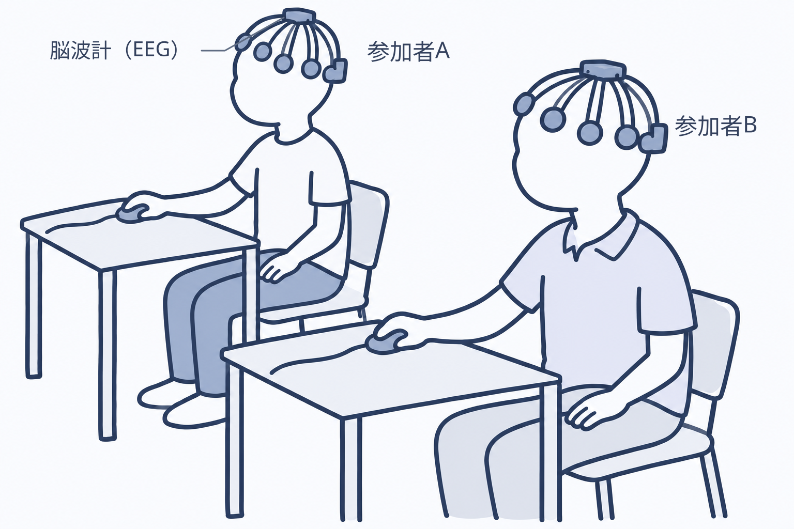
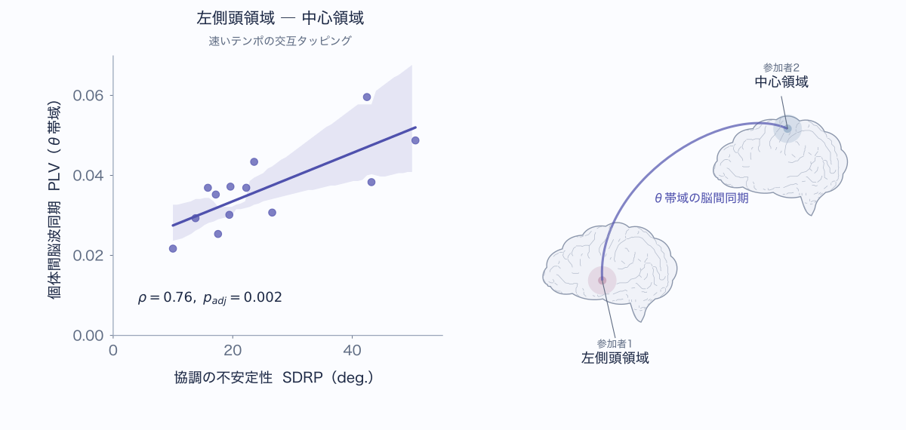
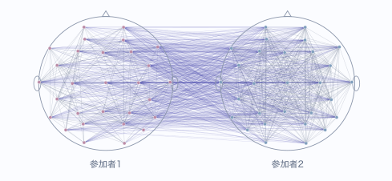
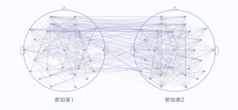

研究概要
協調タッピング課題中における二者間の脳波同期
誰かとリズムを合わせて行動するとき、私たちは相手の動きを予測しながら、自分の動きを調整しています。このような対人協調を支えるメカニズムを探究するために、両者の脳活動の同期性に着目しました（Kurihara et al., 2022, Scientific Reports）。
この研究では、複数人の脳活動を同時に計測する「ハイパースキャニング」を用いました。二人の脳波（EEG）を同時に計測し、交互に指を動かすタッピング課題を通じて、協調行動の安定性と脳間同期の関係を検討しました（図1）。

① お手本のテンポを聞く
8回の音でテンポを覚えます。
② 二人で交互にタップする
お手本の音が止まったら、お互いのタップ音を聞きながら、覚えたテンポを保ちます。
その結果、速いテンポで交互にタッピングする条件では、協調行動が不安定なペアほど、一方の左側頭領域と他方の中心領域におけるθ（シータ）帯域の脳間同期が強いという正の相関が見られました（図2）。ここでの不安定さは、二人の動きの相対位相のばらつき（SDRP）で評価しています。この結果は、脳間同期が、相手に合わせて動きを調整する際の難しさに関わる可能性を示しています。

さらに、協調する両者の対人関係性にも着目しました（Kurihara et al., 2024, Scientific Reports）。初対面ペアと知り合いペアについて、脳内・脳間の同期を組み合わせたネットワークの構造を比較しました（図3）。その結果、初対面ペアでは知り合いペアよりもθ帯域のネットワークの局所効率が高く、ある電極につながる電極同士も、互いに効率よく結ばれた構造が見られました。
初対面ペア

知り合いペア

これらの結果から、ネットワークのつながり方が、相手との関係性を捉える手がかりになることが示唆されます。これらの研究を通じて、協調の難しさや相手との関係性に応じて、両者の行動と脳活動がどのように調整されるのかを探究しています。